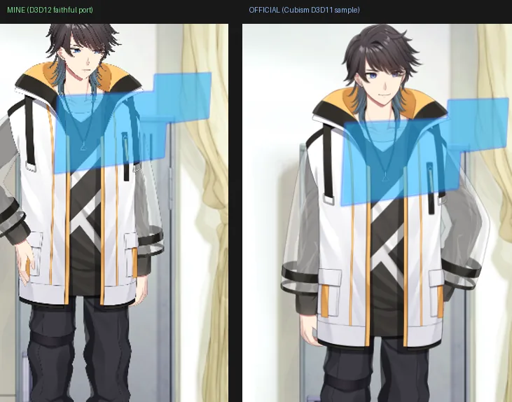

/ works / live2d-d3d12
Live2D × Direct3D 12
自作の MitiruEngine は Direct3D 12 製ですが、Live2D の公式 SDK は D3D12 に対応していません（OpenGL / D3D11 / D3D9 / Metal / Vulkan のみ）。なので、公式の D3D11 レンダラ（CubismRenderer_D3D11）を D3D12 へ自分で移植しました。目標はひとつ ── 公式サンプルとまったく同じ絵が D3D12 で出ること。
公式 D3D11 と並べて、同じ絵になった

左が自作（D3D12）、右が公式の Cubism D3D11 サンプルです。モデル "Ren" のタップ演出で、胸元のホログラム表示まで含めて一致しています。Live2D 公式のサンプルは「どのプラットフォームでも同じ絵が出る」よう設計されているので、その基準にこちらも合わせにいきました。

「壊れて見える」が、じつは設計どおりだった話
移植の途中、Ren というモデルのタップ演出だけ、胸元に変な青い図形が出て「明らかにバグってる」状態でした。原因を追っていくと ── それは PartHologram というもともと設計されたホログラム演出で、モデルのバグではありませんでした。
ただこの演出、Cubism 5 のレンダリング機能をほぼ全部使い切る重さで、198 枚のドロウアブルのうち 20 枚が「advanced blend」（Multiply / HardLight / Color / AddGlow ＋ Atop / Out といった高度な合成）を使い、さらにマスク付きのオフスクリーングループを多用していました。私の移植がそこまで追いついていなかったので、平らな青い板に潰れて「壊れて見えていた」わけです。
これらを公式の CubismBlendMode.fx どおりに（18 カラー × 5 アルファの合成を per-pixel で）実装しきって、初めて公式と同じ絵になりました。「ホログラムが崩れている＝モデルの異常」ではなく「自分の実装の不足」だった、と公式サンプルと並べて初めて切り分けられた ── というのが、作っていていちばん腑に落ちた瞬間でした。確かめる相手（公式の絵）があると、こういう判断ができるんだなと。
移植した中身
公式の D3D11 レンダラの設計に、できるだけ忠実に従いました。とくに効いたのは次のあたりです。
- 描画ループ（DrawObjectLoop） — ドロウアブルとオフスクリーンを描画順で1本のストリームにまとめてフラットに走査する、公式と同じ構造に。描画順はモーション中に毎フレーム変わるので、毎フレーム並べ替え直す（最初これを load 時に固定していて、タップの瞬間だけ重なり順が崩れていました）。
- クリッピングマスク — 被クリップごとに 256² の高精度マスクへ形状を描き、それでクリップ。多マスクなモデルでも目などの境界が崩れないよう、高精度経路に統一。
- オフスクリーングループ（Cubism 5） — パートの集合を自前の描画先へまとめて、親へ「ブレンド＋不透明度＋乗算/スクリーン色」で合成（入れ子対応）。
- per-drawable advanced blend — 18 カラー × 5 アルファ（Porter-Duff）の合成を、合成先をコピーして per-pixel シェーダで。Ren のホログラムの正体はここ。
- 三重バッファリング — エンジンは3フレーム同時進行なので、CPU が毎フレーム書く頂点・定数バッファは3重化しないと、GPU 読み中に上書きして全体がちらつきます（これでマスク/オフスクリーンの破綻もまとめて直りました）。
8 体の公式モデル（Haru / Hiyori / Mao / Mark / Natori / Ren / Rice / Wanko）で、公式サンプル相当のフレーミング・マウス追従・タップモーション・物理・目パチ・呼吸まで含めて確認しました。
クレジット：本実装は Live2D Cubism SDK を使用しています（© Live2D Inc.）。掲載スクリーンショットのモデル（Haru / Ren など）は Live2D Inc. の無償提供サンプルモデルで、Live2D Free Material License Agreement に基づき表示しています。比較画像の右側は公式 Cubism D3D11 サンプルの実行画面です。リポジトリには SDK 本体・モデルファイルは同梱していません（再配布なし）。Cubism SDK / Core の利用は各 SDK 使用許諾 に従います。